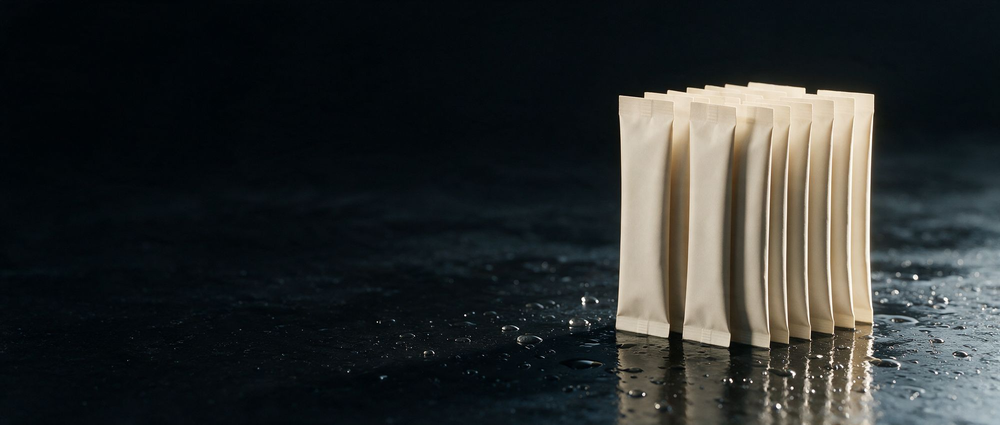

The aisle is the argument.
Four gaps, in four different sets, in the same store. Each one is a place a shopper is already standing and finding nothing they want. That is the whole thesis, and everything that follows is the detail.
Four gaps, in four different sets, in the same store. Each one is a place a shopper is already standing and finding nothing they want. That is the whole thesis, and everything that follows is the detail.

Walk the children's supplement set and it is gummies, sugar and cartoon characters, almost all of it clustered in one narrow price band. There is a value tier and a middle. There is no premium tier at all, in an aisle where the shopper is a parent making a decision about their own child.
The demand for something better is already proven, and it is all going somewhere else. NuBest, Doctor Taller and TrueHeight sell growth and development products at multiples of the shelf price, direct to consumer, on worry. None of them is on a shelf you control.
What that costs today. The highest-intent shopper in the aisle, the one who would happily pay three times the average, is either buying nothing or buying it online from a brand you cannot stock.
The deepest driver here is not vitamins. It is protection. From the moment a child is born a parent watches: height, weight, sleep, school, confidence, friends, milestones. A comment from a pediatrician or a comparison in a playground triggers the same question every time. Is my child okay, and am I doing enough?
Every brand in the aisle answers that with worry. STALK answers it with evidence, and makes the daily minute feel like a decision a parent made rather than a fear they gave in to. One serving a day, in whichever format suits the household, across three age bands so a family stays in the brand for a decade rather than a season.
| Age band | Facings | What it is built around |
|---|---|---|
| Ages 2–4 | One | The first developmental years, gender neutral, minimum sensory friction |
| Ages 5–9 | Two, the hero | The core window and the volume driver |
| Age 10+ | One | Adolescence, where the family trades up rather than out |
| Format | Sits where | What it is for |
|---|---|---|
| Sachet | Main shelf | The daily ritual, and the format that travels in a school bag |
| Stick pack | Main shelf, register | The same serving in a narrower pack, and the cheapest way to trial the brand |
| Tub | Top of set | 60+ servings for the household that has already decided. The best value per serving and the deepest ring in the aisle |

A premium child development brand built for a shelf rather than a funnel. Nobody has built one.Why it wins the shelf


Take what is proven, make it better, then make it ours.

Hydration is growing faster than almost anything else you stock, and every brand in it is built the same way: one formula, four flavours, one occasion. The shopper picks a flavour, buys one box, and the repeat is whatever the flavour fatigue allows.
The cult brand sits at $1.50 a stick and private label programmes land near $0.50. The whole set is competing on price inside a single occasion.
The unclaimed position is the one above flavour: a system where the occasions are the SKUs. A shopper who buys the logic buys several, so the basket is three deep instead of one.
Price points per the Wegmans category analysis. Market context: $8B+ globally, growing around 9% a year through 2030, with category growth running +52% year on year and +29% ahead of sports drinks. Grand View Research 2024; SPINS.
1000mg sodium, 200mg potassium, 60mg magnesium and zero sugar in every stick. Only the Plus One changes, which is why seven SKUs cost one formula to hold.
| Occasion | The promise | What stacks on top |
|---|---|---|
| Morning | Hydration + Energy | Natural caffeine, B-vitamin complex |
| Workout | Hydration + Recovery | BCAAs, creatine monohydrate, magnesium glycinate |
| Travel | Hydration + Immunity | Vitamin C 1000 mg, zinc, elderberry |
| Night Out | Hydration + Energy | B-vitamin complex, natural caffeine |
| Morning After | Hydration + Recovery | NAC, milk thistle, B-vitamins |
| Daily Routine | Hydration + Glow | Marine collagen, hyaluronic acid, biotin |
| Evening | Hydration + Calm | Magnesium glycinate, L-theanine, ashwagandha |

The shopper is not choosing a flavour. They are buying a week, and a week is three sticks.Why it wins the shelf


Count the protein formats you stock. Tubs, bars, ready-to-drink bottles. Every one of them either needs a scoop and a shaker, or is a chilled bottle carrying water around the country.
Single-serve powder does not exist as a shelf position. That means protein has no presence at the register, none in the travel set, none in the impulse zone, and no way to be bought by a shopper who did not come in for it.
The zone this opens. A flat sachet is the only protein format that can sit at checkout, in a travel bay, in a hotel channel, and in a multipack beside the tubs. It is also the first way a shopper can compare protein by the serving.
Whey isolate across four, one plant blend to open the dairy-free shopper without needing a second brand.
| SKU | Base | The occasion it exists for |
|---|---|---|
| Unflavoured | Whey isolate | Disappears into coffee, oats or a smoothie |
| Chocolate | Whey isolate | The volume SKU and the first purchase |
| Vanilla | Whey isolate | The mixer, and the base the line grows from |
| Coffee | Whey isolate | The 7am serving no tub has ever been present for |
| Plant | Plant blend | Opens dairy-free without a second brand |

The first protein you could put at the register, in a travel bay, and beside the tubs.Why it wins the shelf


Latin flavour stopped being regional some time ago. It is the default palate of shoppers under thirty, of every background, and your snack, candy and beverage sets already reflect that. The functional set has not moved.
That is a gap with a shopper attached to it. The under-30 basket is the one the vitamin and hydration sets struggle hardest to win, and flavour is the cheapest reason to give them to walk down it.
Why we can do it and others cannot. Flavour is the whole product here, and flavour is the part of the supply chain most brands rent. We hold 1,000+ in rotation and run a flavour lab on site.
Collagen and protein follow in the same six flavours, so the block grows down the aisle rather than sideways.
| Flavour | Colourway | Why the shopper already knows it |
|---|---|---|
| Mango con chile | Chilli red | The street-cart standard. Sweet, then heat, then lime |
| Tamarindo | Marigold | Sour, sticky, unmistakable, already in your candy set |
| Jamaica | Jade | Hibiscus. The agua fresca in your chilled aisle |
| Horchata | Cobalt | Rice and cinnamon. The comfort flavour of the set |
| Chamoy | Hot pink | Sweet, salty, sour and hot. The one that travels online |
| Guayaba | Burnt orange | Guava. The softest way in for a new drinker |

The flavours are already in your store. They are just in the wrong aisle.Why it wins the shelf


Every flavour, every format and every certification these four need already exists on one floor in Cedartown. What is being decided is not whether we can make them. It is which ones deserve to exist.
Every one of these would be made on our own floor in Cedartown. That is not a credential, it is the reason the answer to a reorder, a reformulation or a flavour change is weeks rather than quarters.
On runs of 30,000+ units, against a 12–16 week industry norm per ASCM. Smaller stock runs ship in days.
| A typical supplier | Us |
|---|---|
| Books a co-manufacturer | Walks down the corridor |
| Waits on a flavour house | 1,000+ flavours already in rotation |
| Sends samples out for testing | ISO 17025 lab on site |
| Reformulates from scratch | 800+ stock formulas to start from |
| One brand at a time | Four, off two format families |
Stock formulations from 500 units, custom from 1,000, stick packs from 30,000. Retail-compliant documentation from the first run: COAs on every batch, and label regulatory review handled in house.
Take one, take all four. The advantage is the same either way: the company that would make it is the company you are talking to.
These are dietary supplements. Every brand speaks in structure and function claims, and none of them treats, cures or prevents anything. Nothing in this document has been designed, formulated or priced. Every figure shown is indicative and would be set with the partner.